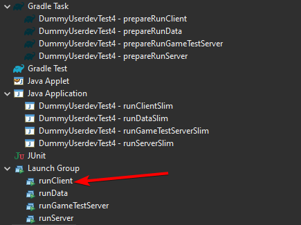

ForgeGradle 5 -> 6 Migration Primer
This is a high level, non-exhaustive overview on how to migrate your buildscript from ForgeGradle 5 to 6.
If there’s any incorrect or missing information, please leave a comment below. Thanks!
Add Foojay Toolchains Plugin
Gradle now uses the Foojay Toolchains Plugin to manage the Java toolchain. The plugin must be added to the settings.gradle[.kts]:
With Gradle DSL:
// In settings.gradle
plugins {
id 'org.gradle.toolchains.foojay-resolver-convention' version '0.5.0'
}With Kotlin DSL:
// In settings.gradle.kts
plugins {
id("org.gradle.toolchains.foojay-resolver-convention") version "0.5.0"
}Update Gradle to 8.1.1
First, you need to update your Gradle Wrapper to use 8.1.1. You can find additional information regarding the migration process from 7 to 8 on Gradle’s migration guide.
This can be done in one of two ways:
gradle wrapper
The preferred option is to use the gradle wrapper command with the --gradle-version option.
# Inside root directory of the gradle project
./gradlew wrapper --gradle-version=8.1.1gradle-wrapper.properties
This method is not recommended, and it should only be used if the gradlew wrapper command above fails.
Update the version in the distributionUrl property within gradle/wrapper/gradle-wrapper.properties. Afterwards run ./gradlew wrapper.
distributionUrl=https\://services.gradle.org/distributions/gradle-8.1.1-bin.zipUpdate ForgeGradle Plugin Version
After updating Gradle, update the ForgeGradle version in your build.gradle[.kts] to [6.0,6.2):
With Gradle DSL:
// In build.gradle
plugins {
id 'net.minecraftforge.gradle' version '[6.0,6.2)'
}With Kotlin DSL:
// In build.gradle.kts
plugins {
id("net.minecraftforge.gradle") version "[6.0,6.2)"
}Remove forceExit from Run Configurations
ForgeGradle has now removed the forceExit property in run configurations. Changes to run tasks only apply to the current project and not any subprojects.
Minor Additions, Changes, Removals
Reobfuscated Classpath Inheritance
If you were using classpath.from within a reobf* task configuration to declare extra libraries, the reobf* task needed to take into account; it should be migrated to the libraries.from property instead.
Eclipse Launcher Groups
If ForgeGradle is setup such that Eclipse should run the Gradle tasks before starting the game, you must execute the run configuration from the Launch Group folder. This is only true if new properties are enabled within the minecraft block.

Removal of resources and classes in ModConfig
The properties resources and classes within the mods block of a run configuration have been removed from ForgeGradle 6.